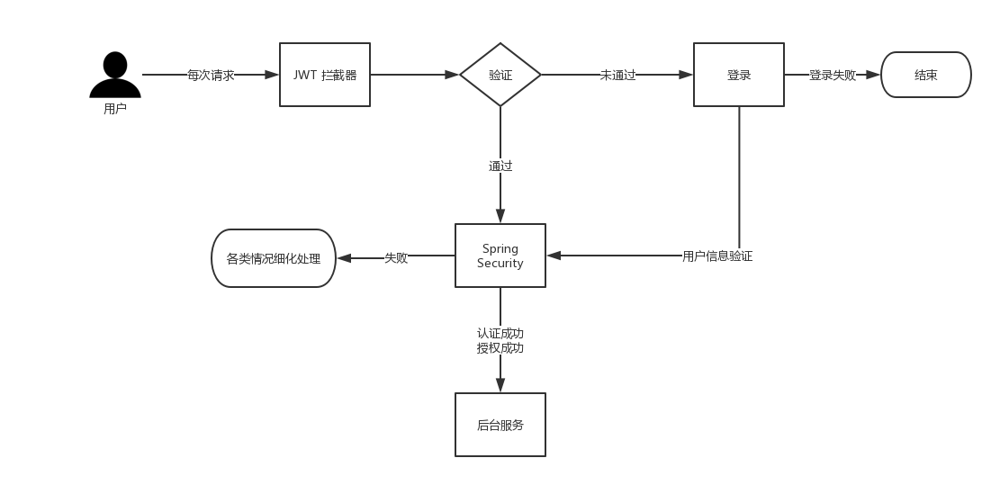
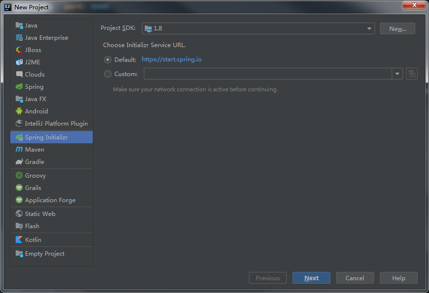
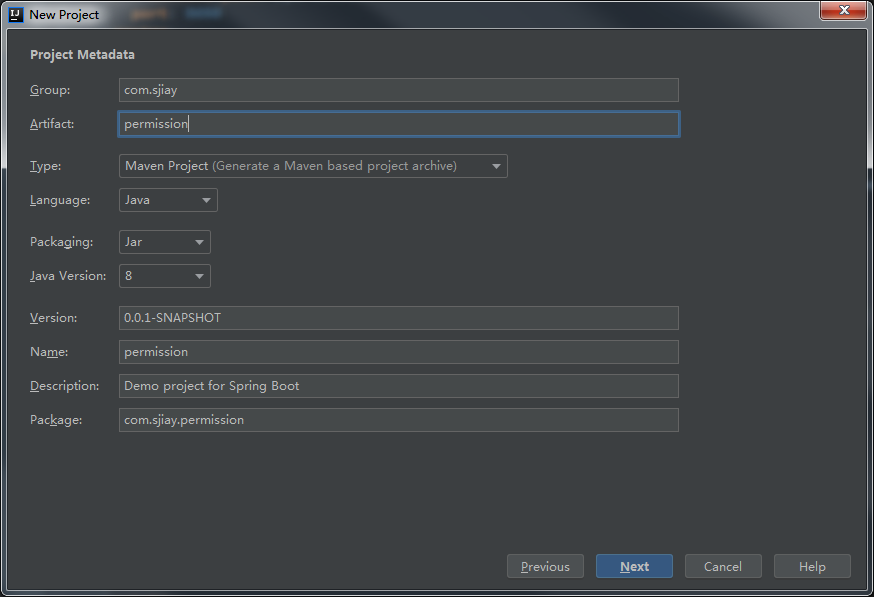
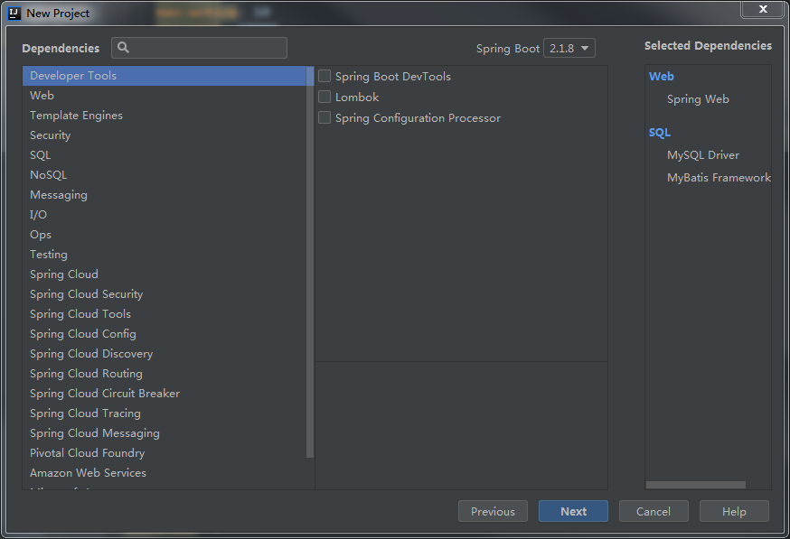
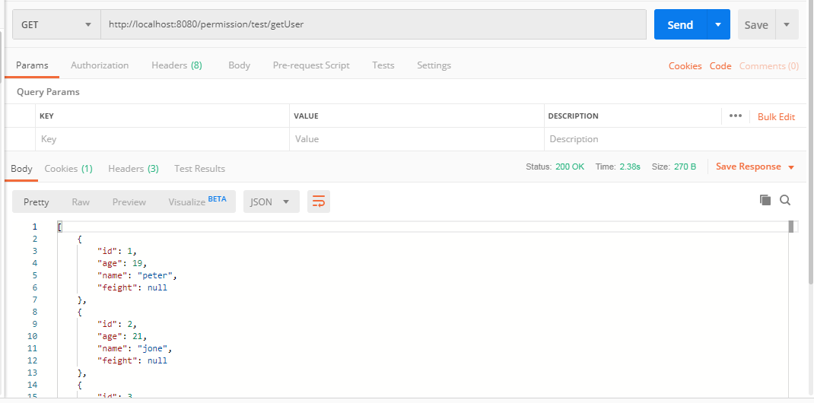
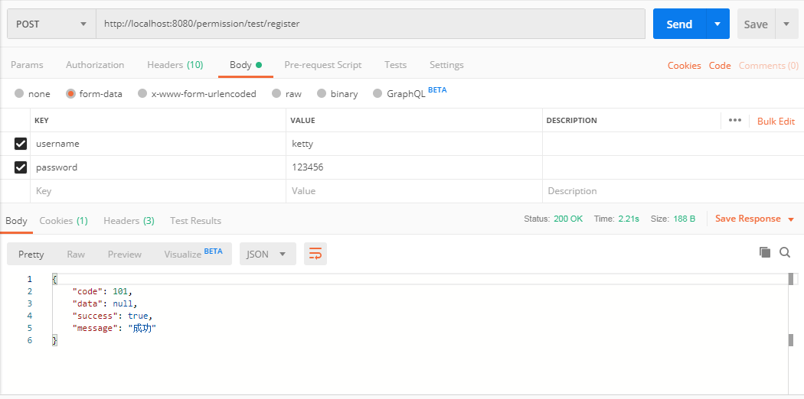
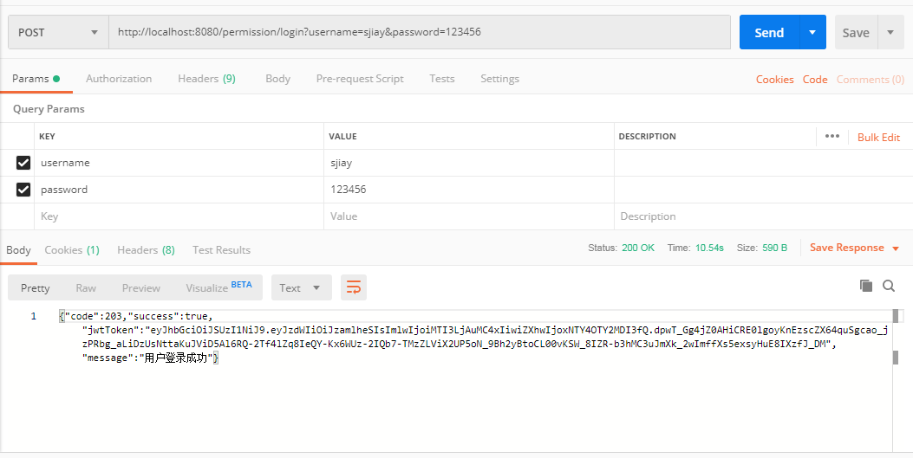
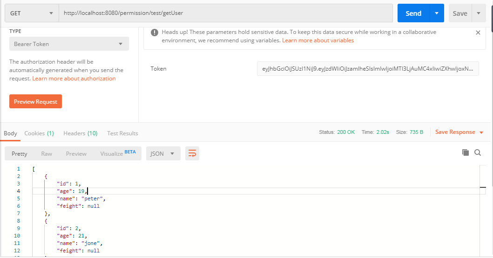

本项目是SpringBoot+Mybatis实现的后端项目,相关测试都使用postman进行了测试，主要的思想是利用token
作为前后端交互身份验证信息，通过设置token的刷新时间来保证token的安全性，同时将token放入redis中，
并建立黑名单，将过期以及登出的token移到黑名单，使用SpringSecurity实现对用户的认证鉴权。
一、主要环境
编译器使用Idea，项目使用SpringBoot+Maven进行构建，SpringSecurity进行认证和授权，其中还涉及到的
框架包括Mybatis、Redis、Druid、JWT、Lombok、Logback。其中Redis的安装以及Idea中集成Lombok等插件
不单独进行展开，可自行百度进行环境准备。
[github项目地址] (https://github.com/Sjiay1023/permission)
二、系统机构图

三、SpringBoot准备
创建项目
我是使用IDEA创建项目，jdk选择1.8

选择maven构建，相关名字自行命名

添加依赖，后面redis，sercurity等依赖后续再加，我这边使用的SpringBoot版本是2.1.2.RELEASE，注意改成
你自己想要的SpringBoot版本

ok，最简单的一个SpringBoot项目就搭建完成
此处直接将后面需要用到的依赖全部一并给出，分别为lombok、redis、fastjson、jwt、druid,Security的依赖
这边暂时没有加上，到后面再加防止获取用户列表报错
具体pom文件如下：
1 | <dependency> |
配置application.yml
包括了数据源、Mybatis、redis、druid等的完整配置
1 | server: |
context-path路径的设置时为了后续对Url的统一拦截，注意SpringBoot2.0之后把server.context-path
改成了server.servlet.context-path,这个根据自己版本修改。
四、简单Demo实现
相关配置完成之后，我们就来先实现一个简单的Demo主要功能就是查询数据库User列表，以及一个简单的注册
controller层
1 | package com.sjiay.permission.controller; |
看到上面controller的返回结果是做了一些封装，所以这边我们穿插一下先来实现几个返回格式的类。
返回格式封装
为了整个项目结构清晰，把一些公用的以及后面涉及的拦截相关的类我们单独放到一个包里面，在 permission
(新建项目时候的最底层包名)的同级目录下新建一个common包，具体common下又分成很多子包，具体看后面类的
package 所指目录，或到源码下查看。
两个类如下：
ResultVO
1 | package com.sjiay.common.VO; |
这边考虑到了多种情况下的返回格式，运用了多态，其中jwtToken的返回在后面Token鉴权中会有用到，这边就先这么写了，
code，message用ResultEnum枚举类封装如下：
1 | package com.sjiay.common.Enums; |
service层
接口：
1 | package com.sjiay.permission.service; |
Impl:
1 | package com.sjiay.permission.service.impl; |
mapper层
1 | package com.sjiay.permission.mapper; |
对应的DemoMapper.xml:
1 | <?xml version="1.0" encoding="UTF-8" ?> |
entity
1 | package com.sjiay.permission.entity; |
实体类中的get,set方法可以使用Lombok插件的@Data注解让其在编译时自动生成，这边还是写完整了，
在实际项目中可以减少不少代码量，数据库中的主要有两个表，一个girl表和DemoEntity字段名一样就可以，
另外一个user表主要有username和password就可以，具体脚本如下：
1 | DROP TABLE IF EXISTS `girl`; |
OK我们访问http://localhost:8080/permission/test/getUser看一下结果


成功获取到结果，注册也成功完成，接下来我们在这基础上来引入SpringSercurity实现相应的拦截
三、SpringSecurity
引入相关依赖
1 | <dependency> |
注册密码加密
在进行用户注册时，我们使用了BCryptPasswordEncoder对密码进行了加密之后再进行入库，其中
BCryptPasswordEncoder类是SpringSecurity类提供的的加密算法，主要使用BCrypt强哈希方
法来加密密码，使每次加密的结果都不一样，具体加密实现没有深入研究，也可使用自定义加
密算法来加密，只需修改DemoServiceImpl如下：
1 | package com.sjiay.permission.service.impl; |
实现SpringSecurity各个核心接口，处理用户各种状态
实现AuthenticationEntryPoint接口，处理用户未登录
1 | package com.sjiay.common.security; |
实现AccessDeniedHandler接口，处理无权登录的情况
1 | package com.sjiay.common.security; |
实现AuthenticationFailureHandler接口，处理用户登录失败
1 | package com.sjiay.common.security; |
实现AuthenticationSuccessHandler接口，处理登录成功的情况
1 | package com.sjiay.common.security; |
这里使用JwtTokenUtil工具类生成token后面会有具体实现，这边就不展开了
实现LogoutSuccessHandler接口，处理退出成功
1 | package com.sjiay.common.security; |
实现UserDetails实现自定义对象
1 | package com.sjiay.permission.entity; |
权限访问控制
1 | package com.sjiay.common.security; |
注意这里的url记得改成application.yml里设置的context-path，用于整体性的路径控制
JWT生成Token的工具类
相关依赖上面已经说过这边不在说明，实现工具类如下：
1 | package com.sjiay.common.utils; |
文中的jwt.jks是jwt证书，你可以自己生成，也可以用我生产好的在github项目中的resource目录下找
这边简单说一下思路：每次登陆成功会返回token给前端做本地保存，以后每一次前端请求api都会在请
求头中带上这个token，我们后面加入一个过滤器，专门拦截token然后验证。针对token暴露的问题，是
实现一个黑名单，每一次登出或失效的token都加入黑名单（这一块我用redis实现，用其他缓存数据库都
行，就是一个思路的问题）。token生成的时候也会在redis加入相应刷新时间和失效时间（例如：7天免
登陆，即在7天内会自动刷新用户的token；而失效时间定为十五分钟，即每个token只有15分钟有效时间，
过了这个时间，会去判断是否在刷新时间内，如果是，则refresh token，并set进request的请求头之中）
jwt拦截器
1 | package com.sjiay.common.filters; |
这里使用到了SelfUserDetailsService，主要是用来做一个用户认证，接下来是相关实现
springsecurity核心处理
SelfUserDetailsService实现，继承自UserDetailsService
1 | package com.sjiay.permission.service; |
mapper以及对应xml实现
1 | package com.sjiay.permission.mapper; |
1 | <?xml version="1.0" encoding="UTF-8" ?> |
security核心处理类
1 | package com.sjiay.common.config; |
ok,我们开始使用postman进行测试
登录成功

复制返回的token值，进行getUser测试

请求成功！